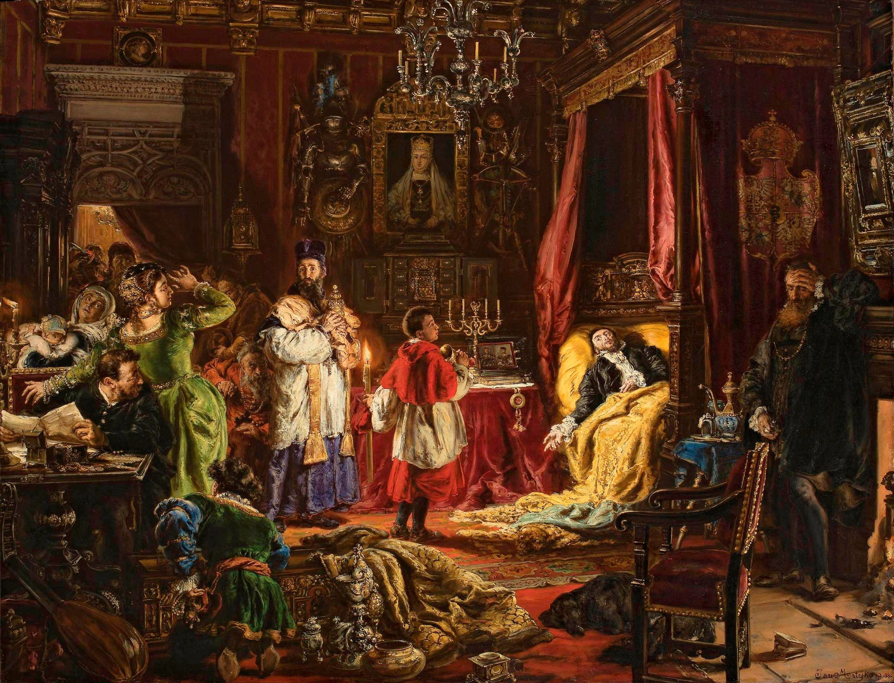

Tarihçe
Polonya Bayrağı (Lehçe: Flaga Polski), Polonya Cumhuriyeti'nin resmi ulusal sembollerinden
biridir. Bayrağın tasarımı, üstte beyaz ve altta kırmızı olmak üzere iki eşit yatay şeritten oluşur.
Beyaz renk, Polonya’nın barış ve özgürlüğünü simgelerken, kırmızı renk, ulusun cesaretini ve bağımsızlık
mücadelesini temsil eder. Bu iki renk, Polonya'nın tarihsel ve kültürel kimliğini yansıtan önemli
unsurlardır.
Polonya Bayrağı, Endonezya ve Monako bayraklarıyla benzerlik göstermektedir; ancak bu bayraklar
arasındaki en büyük fark, renklerin dizilimidir. Endonezya bayrağı, üstte kırmızı, altta beyaz
şeritlerden oluşurken, Monako bayrağı da aynı şekilde tasarlanmıştır. Bu nedenle, Polonya Bayrağı'nın
tasarımı, hem özgün bir kimliğe sahip olmasını sağlamakta hem de uluslararası arenada tanınmasını
kolaylaştırmaktadır.

Jagiellon Hanedanı Litvanya kökenli bir hanedandı. Litvanyalılar savaşçı bir ulustu ve 14.
yüzyılın sonlarına gelinceye kadar hala pagan dinlerine inanıyorlardı. Litvanya Grandükü Jagiełło 1386
yılında Hristiyanlığı kabul etti, 11 yaşındaki Polonyalı prenses Jadwiga ile evlenerek kendisini Polonya
prensi ilan etti. Böylece Piast Hanedanı sona erdi ve Jagiellon Hanedanı başladı. Hanedanın üyeleri
1377-1392 ve 1440-1572 yılları arasında Litvanya Grandükü görevini yürüttüler, 1386-1572 yılları
arasında Polonya kralı, 1440-1444 ve 1490-1526 yılları arasında Macaristan kralı, 1471-1526 yılları
arasında ise Bohemya kralıydılar. Bu dönemde genel olarak Polonya ve Litvanya aynı kral tarafından
yönetilmekle birlikte ayrı devletler olarak kaldılar. Ancak Polonya kralı II. Zygmunt August'un çocuksuz
olarak ölmesi üzerine iki devletin magnatları (soylular) Polonya'nın Lublin kentinde bir araya gelerek 1
Temmuz 1569 tarihinde Lublin Antlaşmasını imzaladılar ve iki devleti bir araya getirdiler. Böylece
Lehistan-Litvanya Birliği kurulmuş oldu. Bu tarihten sonra 1795 yılında parçalanmasına kadar Lehistan ve
Litvanya tek kral, tek meclis (Sejm) ve tek senato tarafından yönetildi.